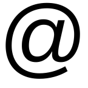

I am researcher in mathematical quantum physics at the laboratory of mathematics of Cergy's university, and lecturer. You can find my CV here, and email me on louis.garriguecyu.fr
My work aims at understanding some mathematical structures underlying many-body quantum systems, by analyzing existing methods and trying to develop new tools. I use functional analysis, spectral theory, variational methods, and simulations
Articles
Preprints
- [10] L. Garrigue, B. Stamm. On reduced basis methods for eigenvalue problems, and on its coupling with perturbation theory (arxiv:2408.11924), preprint (2024)
- [9] G. Dusson, L. Garrigue, B. Stamm. A multipoint perturbation formula for eigenvalue problems (arxiv:2305.08151), preprint (2023)
Publications
- [8] L. Garrigue. Mixed state representability of entropy-density pairs (arxiv:2203.16441), Journal of Mathematical Physics (2024)
- [7] É. Cancès, L. Garrigue, D. Gontier. A simple derivation of moiré-scale continuous models for twisted bilayer graphene (arxiv:2206.05685), Physical Review B (2023)
- [6] É. Cancès, L. Garrigue, D. Gontier. Second-order homogenization of periodic Schrödinger operators with highly oscillating potentials (arxiv:2112.12008), SIAM Journal on Mathematical Analysis (2022)
- [5] L. Garrigue. Building Kohn-Sham potentials for ground and excited states (arxiv:2101.01127), Archive for Rational Mechanics and Analysis (2022)
- [4] L. Garrigue. Some properties of the potential-to-ground state map in quantum mechanics (arxiv:2012.04054), Communications in Mathematical Physics (2021)
- [3] L. Garrigue. Unique continuation for many-body Schrödinger operators and the Hohenberg-Kohn theorem. II. The Pauli Hamiltonian (arxiv:1901.03207), Documenta Mathematica (2020)
- [2] L. Garrigue. Hohenberg-Kohn theorems for interactions, spin and temperature (arxiv:1906.03191), Journal of Statistical Physics (2019)
- [1] L. Garrigue. Unique continuation for many-body Schrödinger operators and the Hohenberg-Kohn theorem. (arxiv:1804.07564), Mathematical Physics, Analysis and Geometry (2018)
Positions
- Feb 2023 - : "tenure track" at Cergy's university, in the laboratory of mathematics
- Oct 2022 - jan 2023 : postdoc at Stuttgart's university, in the team of Benjamin Stamm
- Sep 2020 - sep 2022 : postdoc at Cermics, École des ponts, in the team of Éric Cancès and in Inria's Matherials project
- 2017 - 2020 : PhD in mathematical physics at the university Paris-Dauphine, with Mathieu Lewin
Codes
On my github repository, you can find:
- a code implementing multipoint perturbation theory up to second order and applying it to Schrödinger operators, corresponding to this article
- a code to compute an effective model of twisted bilayer graphene and its band diagrams, corresponding to this article. Moreover, here is a file with more details for the implementation
- a code to compute the eigenmodes of the homogenized Schrödinger operator, corresponding to this article
- a code to propagate in time the exact many-body Schrödinger operator containing the two-body interaction between particles, in dimension one but for any number of particles
- a code to obtain the inverse potential of some one-body density, corresponding to this article.